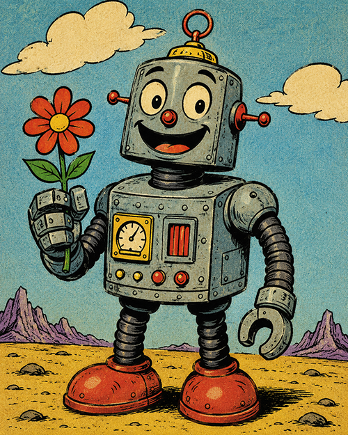
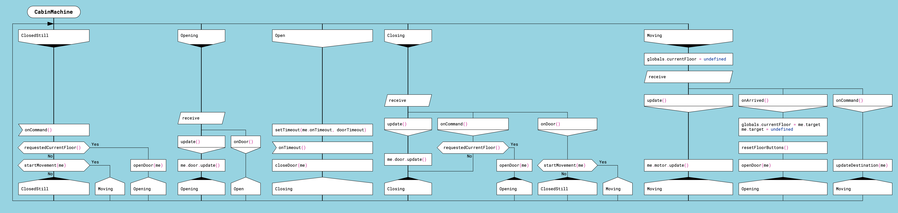

State Machines in DrakonTech

DrakonTech generates state machine code in JavaScript and Lua.
What State Machines Are For
State machines (finite automata) are an excellent tool for developing control algorithms.
Algorithms can be divided into two large groups: computational algorithms and control algorithms. An example of a computational algorithm is calculating the roots of a quadratic equation. A common property of computational algorithms is that they have an end. If such an algorithm contains no errors, it always terminates.
The second group consists of control algorithms. Their defining characteristic is that they deal with processes that are stretched out over time. Many control algorithms have no end. For example, the algorithm that controls a heartbeat.
The problem of creating understandable and reliable control algorithms is extremely important. Our entire technological civilization depends on it. Moreover, complex computational algorithms are also processes. Complex computations must also be controlled. Even simple software objects, such as user interface elements, require control logic. All this makes control algorithms extremely important and widespread.
What Is a State Machine
A state machine is an object that can switch between several states. The number of such states is finite, hence the name "finite state machine." A state machine accepts a finite number of message types. Its reaction to messages depends on the state it is currently in.
Imagine a class that has several methods. The difference between a state machine and a class is that the machine's methods behave differently depending on the current state. For example, an elevator can move up, move down, or stand still. Depending on the state of the elevator controller, the elevator responds differently to button presses. If the doors are open, pressing a button will not start movement.
It turns out that state machines are a convenient way to model control algorithms. A state machine is useful because it reduces complex behavior to a small number of scenarios. These scenarios are easy to identify and test.
How to Represent a State Machine in DrakonTech
The main difficulty in creating state machines is visualizing them clearly. Existing state machine diagrams have drawbacks. One drawback is the lack of visible transition logic between states. Another drawback is the chaotic arrangement of states on the diagram.
DRAKON offers a way to represent state machines that eliminates these drawbacks. DRAKON allows all essential information about a state machine to be placed on a single visual scene. This information includes the logic for selecting the next state. In addition, state machines appear in an orderly and uniform style.
The proposed representation is as follows.
- Each state of the machine corresponds to one branch of the silhouette.
- A Select icon with the keyword receive is placed on the branch. The Case icons under the Select icon represent the types of messages that the machine processes in that state.
- Below comes the logic that contains the actions performed when processing the message, as well as the selection of the next state.
- The next state is selected using an Address icon. The Address icon points to the next state.
Each silhouette branch may contain several Address icons. In other words, depending on the situation, after receiving a message, the machine may choose among several possible next states.
For every Case icon on every silhouette branch, DrakonTech generates a handler method. The handler signature (its name and parameters) is taken from the Case icon. A machine may expect the same message in one or several states. In that case, the message signature must be identical in all states.
If a state expects only one type of message, a Simple Input icon can be used. The Simple Input icon specifies the handler signature in the same format as the Select icon.
The Simple Input and Select icons with the receive keyword are the points where the state machine pauses and waits for incoming messages.
Here is an example of a state machine from the demo application "Lift". This machine controls the elevator cabin.

Example of a state machine in the DRAKON language
The CabinMachine state machine has several states:
- ClosedStill. In this state, the machine waits for a single message: onCommand.
- Opening. Expected messages: update, onDoor.
- Open. Expected message: onTimeout.
- Closing. Expected messages: update, onCommand, onDoor.
- Moving. Expected messages: update, onArrived, onCommand.
The expressions in the Case and Simple Input icons look like function calls: onTimeout(), onDoor(). However, these are declarations of handler methods. They can be called from outside the machine like this: cabin.onDoor().
In this machine, the handlers do not accept arguments. Arguments can be added, and then the corresponding handler method will accept those arguments. Handler arguments remain available inside the machine until the next Simple Input icon or Select icon with the receive keyword.
For example, if we place onDoor(info) in a Case icon, the info argument will be added to the handler method. The value of info will remain available until the next waiting point.
The machine object itself is available inside a state machine diagram under the name me. This can be used to access the machine object's fields.
Another use of the me object is obtaining a specific event handler method as a callback. The usage pattern is as follows: first, pass the handler as a callback to some function, then wait for the corresponding event.
An example of this pattern can be found in the CabinMachine state machine. In the Open branch, we first pass the onTimeout event handler: setTimeout(me.onTimeout, doorTimeout). Then we wait for the onTimeout event: onTimeout().
Advantages of Representing State Machines with DRAKON Silhouettes
A quick glance at the diagram immediately shows which states are possible for the state machine. It is enough to look at the branch headers. Since all branch headers are located on the same horizontal line at the top of the diagram, there is no need to scan the entire diagram to find them.
For each state, it is easy to determine which message types the machine expects. To do this, simply inspect the Select icons. These icons are also arranged on a horizontal line.
Below the Select icons are the decision trees that determine the machine's actions and the transition to the next state. Transitions are shown by Address icons, which are also aligned horizontally. Therefore, a single glance at a silhouette branch is enough to see which states can follow the current one.
Forced Machine Shutdown
One advantage of these state machines is that they can be forcibly stopped using the stop() method. In other words, client code can turn off a state machine. If the machine is waiting for external events, such as network events or user actions, those events will be ignored when they arrive.
This kind of "soft" shutdown prevents errors that occur when events arrive after the program no longer expects them. A stopped machine ignores all events and never throws exceptions.
State Machines as Asynchronous Functions
To start a state machine generated in JavaScript, call its run() method.
The run() method returns a Promise object. Because of this, you can wait for the state machine to finish by using the await keyword. In other words, the run() method is an asynchronous function.
A state machine diagram may use the return keyword with a value. This value can then be obtained from client code via await, just as with ordinary asynchronous functions.
The result is a convenient construct. On one hand, it has the properties of a state machine. On the other hand, it allows the caller to wait for completion using await. In this case, the state machine algorithm must have an end.
DrakonTech can also generate state machines for algorithms that never terminate, but awaiting such a machine will block forever.
Thus, for JavaScript, DrakonTech generates asynchronous functions on steroids that react to external events. In addition, such asynchronous functions can be stopped from the outside.
State Machine Code Generation for JavaScript
DrakonTech supports code generation for state machines in JavaScript and Lua.
To tell the code generator that a DRAKON diagram describes a state machine, insert at least one Select icon with the receive keyword or a Simple Input icon. Both standalone functions and class methods can be turned into state machines.
For a state machine diagram, DrakonTech generates a factory function that creates a machine object. The machine object has a run() method that starts the machine and a stop() method that forcibly stops it while it is running.
The run() and stop() methods cannot be called from inside the machine. The run() method can only be called once.
There are two ways to use a state machine in JavaScript:
- Explicit machine object creation and a call to run().
- Implicit machine object creation and waiting for the result with await.
Explicit creation. To create a machine instance, call the factory function named MachineName_create. Then call the run() method.
machine = SomeMachine_create(x, y) machine.run() machine.someMethod(z)
Implicit creation. A state machine function can be called like a regular asynchronous function:
result = await SomeMachine(x, y)
State Machine Code Generation for Lua
DrakonTech state machines in Lua support only explicit machine object creation:
machine = SomeMachine(x, y) machine.run() machine.someMethod(z)
Note that the machine name does not need the _create suffix.
A Common State Machine Programming Error: Re-Entrancy
When programming state machines, one must avoid situations where the machine re-enters its logic before it has finished processing the previous event.
State machines generated by DrakonTech throw an error when re-entry is attempted. This unpleasant situation is detected immediately, making the bug easier to find and fix.
To avoid re-entry, the architecture should be designed so that the machine never calls code that will in turn call machine methods, including stop().
If this cannot be avoided, machine methods should be called asynchronously. In other words, the call must be postponed until the next step of program execution. In JavaScript, this can be done with setTimeout(): setTimeout(() => machine.method(), 0). DrakonTech can wrap machine method calls in setTimeout() automatically. To do this, place the method call inside a Simple Output icon.
Many problems are solved with several state machines. To avoid re-entry into handlers, state machines should be organized into a hierarchy. In other words, build a tree of state machines. Then define rules according to which machines in the tree exchange messages.
Rules for Message Passing Between State Machines
- Only a parent machine may call methods of its child machines directly.
- In all other cases, machines call methods of other machines asynchronously. Examples: calling methods of a parent machine or sibling machines.
- A machine never calls its own methods.
The Silhouette Shows the Machine as a Whole
State machines can be programmed with DRAKON diagrams even without using silhouettes and Select icons with the receive keyword. For example, clear state machines can be built with decision trees. Primitive DRAKON diagrams are well suited for representing decision-making logic.
The problem is that decision trees and other traditional implementations of state machines split the machine logic into separate fragments. The method proposed in DrakonTech does the opposite: it helps you see the state machine as a whole. A silhouette DRAKON diagram allows you to view the machine as a single flow of control circulating between states.
Conclusion
State machines are not a new technology. They have existed for decades and have proven their effectiveness in many areas, from user interfaces to industrial control systems. The problem is usually not the state machines themselves, but the fact that as they grow in complexity, they become difficult to understand and maintain.
The approach implemented in DrakonTech is aimed specifically at solving this problem. It allows states, messages, actions, and transitions to be viewed on a single visual scene and helps developers perceive the machine as a whole rather than as a collection of disconnected event handlers.